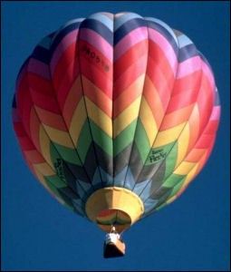
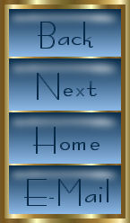

|  | |
|  | In Lesson 16, we worked with slicing up images. This image works with a technique called image mapping. The menu on the left here is a single image but, as you'll see if you mouse over it, the buttons each have their own link destination. If you look at the source for this page, you'll see something called a map defined. It gives the coordinates on the image for each link. The example at the left is a simple one. You can make much more elaborate image maps than this. This lesson calls for me to make a simple menu image map and then a more complicated image map using my imagination to create something special. Well... here's my fancy image map. Just in case you happen to have images turned off (but then why would you look at my portfolio anyway?) I re-created the links at the bottom of the page too. <E-Mail> Graphics and text Copyright © 2006, Irene Smith. All rights reserved. |